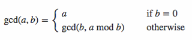

알고리즘 문제풀이 12 - 최소공배수와 최대공약수


문제
두 수를 입력받아 두 수의 최대공약수와 최소공배수를 반환해주는 gcdlcm 함수를 완성해 보세요. 배열의 맨 앞에 최대공약수, 그 다음 최소공배수를 넣어 반환하면 됩니다. 예를 들어 gcdlcm(3,12) 가 입력되면, [3, 12]를 반환해주면 됩니다.
1. 나의 풀이
function gcdlcm(a, b) {
var answer = [];
// if (a - b > 0) {
// var small = b; var big = a;
// } else {
// var small = a; var big = b; }
var big = Math.max(a, b);
var small = Math.min(a, b);
answer[0] = gcd(small, big);
answer[1] = lcm(small, big);
return answer;
}
// 최대공약수
function gcd(small, big){
return (small % big) === 0 ? big : gcd(big, small % big);
}
// 최소공배수
function lcm(small, big){
return (small * big) / gcd(small, big);
}
// 아래는 테스트로 출력해 보기 위한 코드입니다.
console.log(gcdlcm(3,12));
1-1. 두 수의 크기 비교
- Math.max(), Math.min() 메서드를 이용할 수 있다.
- if문으로 확인할 수 있다.
1-2. 최대공약수
function gcd(small, big){
return (small % big) === 0 ? small : gcd(small, small % big);
}
하지만 이 경우 gcd(0, 0)은 NaN이다.
function gcd(small, big){
return big === 0 ? small : gcd(big, small % big);
}
- 함수 gcd는 크기 조건과 상관없이 사용할 수 있다.
- 보통 gcd 공식은 다음과 같다. 따라서
small % big === 0을 확인하는 부분이 불필요하다. 조건식은 단순히 false 일 때 gcd에 한 번 더 태우기 위함이다.
2. 다른 사람들의 풀이
function gcdlcm(a, b) {
var gcd = function(b, a) {
var r = (b % a);
return (r) ? gcd(a, r) : a;
}
return [gcd(b, a), ((b * a) / gcd(b, a))];
}
두 수의 크기 비교 없이 바로 나머지를 구한 뒤 나머지가 있으면 다시 gcd를 타고, 없으면 작은 수를 리턴한다.
function gcdlcm(a, b) {
let gcd = 1, lcm = 1;
for (let i = 1; i <= Math.min(a,b); i++) {
if ((a%i == 0) && (b%i == 0)) {
gcd = i }
}
lcm = a*b/gcd return [gcd, lcm]
}
// 출처 : http://takeuu.tistory.com/116
최소공배수, 최대공약수 모두 1로 초기화 한 뒤, 두 숫자의 공배수 i를 지정해 두 수보다 작거나 같을 때까지 for문을 돌린다.